Agents · Apps · 2026
A local-first idea manager. Every idea is a stamp, folders track its status, and Claude turns a loose sentence, a voice memo or a long chat into a plan you can schedule.
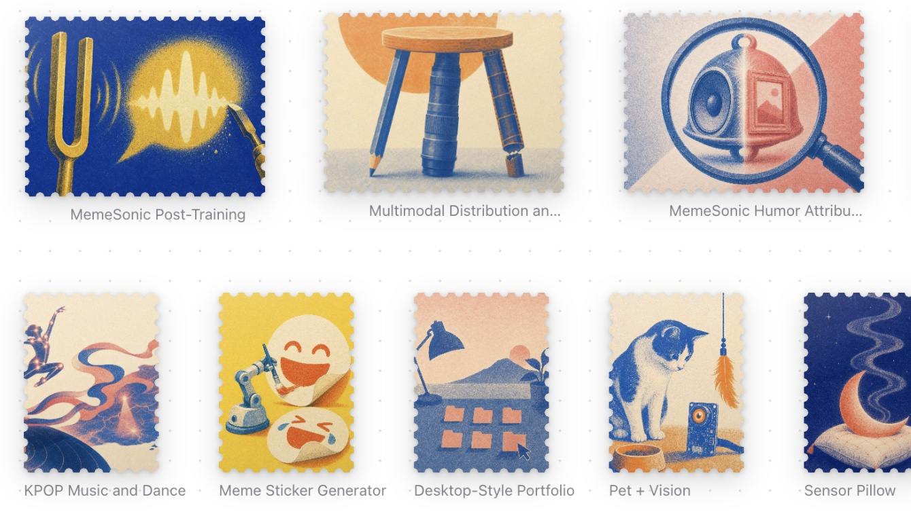
Case Study
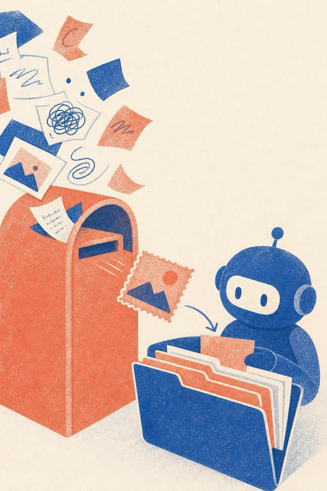
My ideas lived everywhere: notes apps, chat logs, voice memos, the back of slides. Most never got a next step, and the few that did competed for the same evenings.
Idea Post collects them in one place and keeps the number of active projects honest. It runs entirely on my laptop; the only thing that leaves the machine is the text sent to Claude for organizing.
The desk holds four folders: Inbox, Incubating, Queued and Active, with shelved and finished ideas tucked under Archive. Ideas only move forward through explicit status changes, and moving one into Active checks a work-in-progress limit first: over the limit, you pause something, start anyway, or cancel.
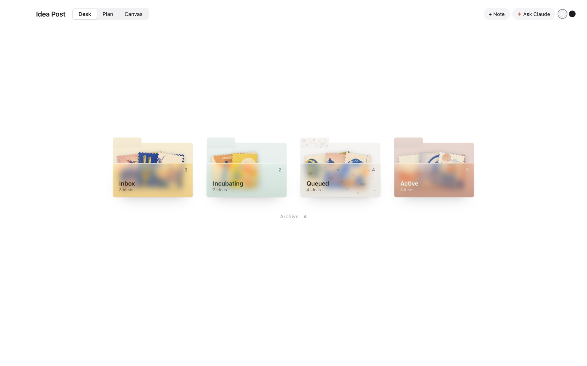
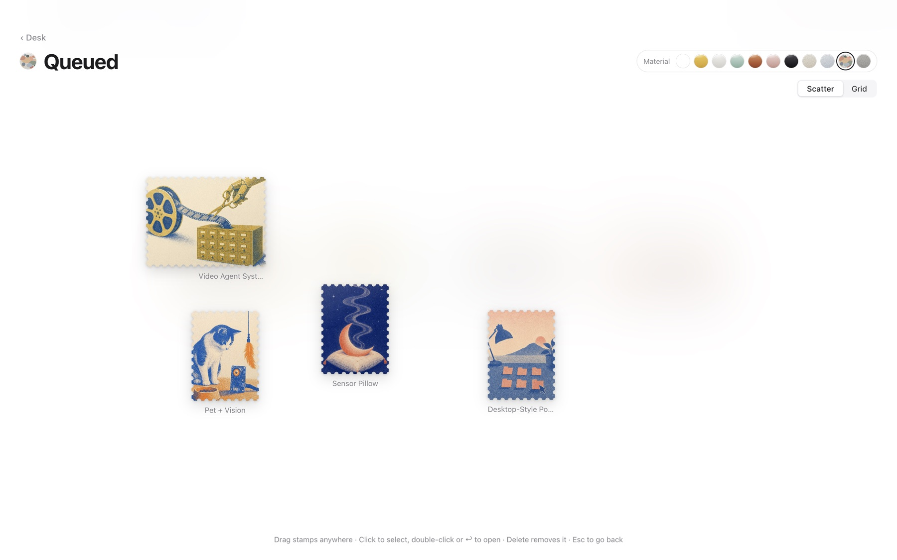
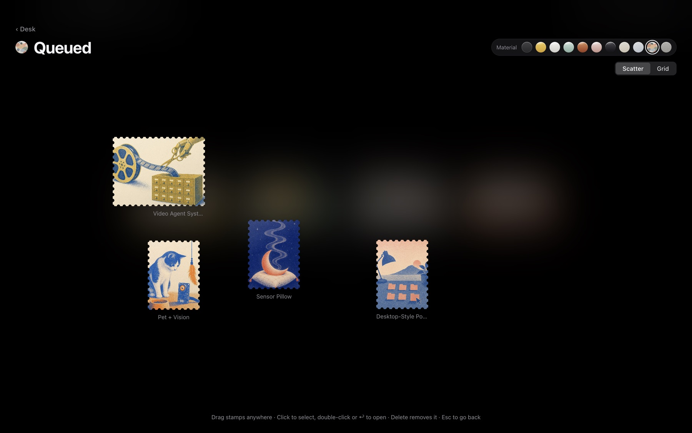
Inside a folder, stamps can be scattered and dragged anywhere, or snapped to a grid. Research ideas are landscape stamps, side projects are portrait. Each folder has its own material, in light and dark.
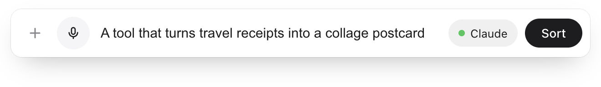
⌘K opens a single input bar. Type a sentence or tap the mic; speech is transcribed locally with whisper.cpp and the audio is deleted right after. Press return and Claude sorts the note into draft cards: one paragraph can become several ideas, and if it overlaps an existing idea Claude proposes appending or merging. Nothing is saved until you confirm, and if the call fails the raw text goes straight to the Inbox marked “to sort”.
Model output is never trusted as-is: drafts are length-checked, references to ideas that don’t exist become new ideas, and appending only fills empty fields or adds to lists, so it never overwrites what I wrote.
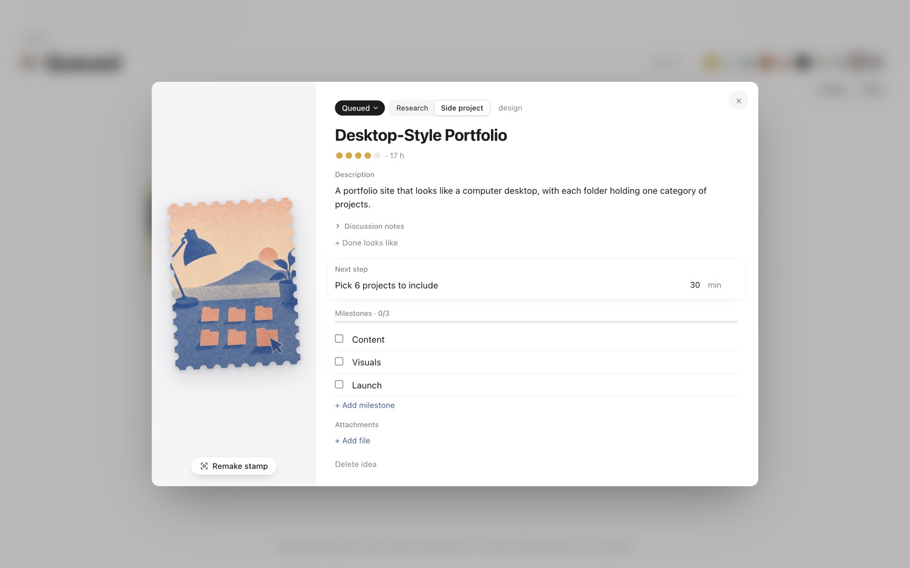
Each card has a description, a single next step with a time estimate, milestones with hours, and attachments. The stamp’s face value is the total estimated hours. Fields written by Claude carry a small AI marker that disappears once you edit them, and every move is logged on a timeline.
Stamps are made by hand in a four-step ritual: pick an image, frame it on a sheet of stamp paper, hold the lever (or space) to punch the perforations, then tear the stamp off.
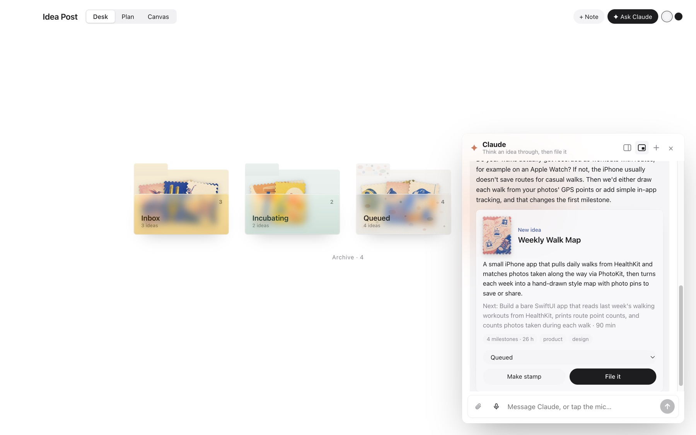
⌘J opens a chat that can dock on the right or float. Talk an idea through, drop in PDFs or images (uploaded once through the Files API and referenced by id afterwards), and when it’s clear Claude proposes a card through a tool call. “File it” saves it and the stamp flies into its folder, carrying the conversation and any documents with it. If you ask for a PRD, Claude attaches it to the card.
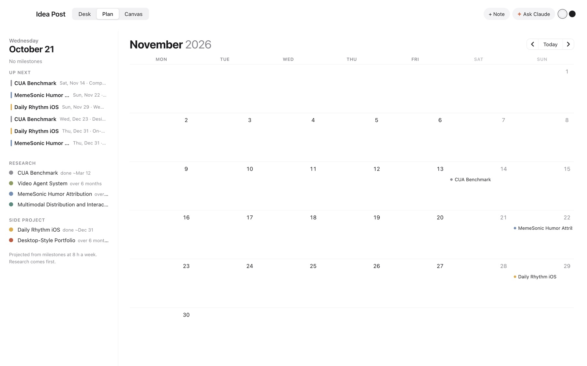
The Plan tab projects every milestone onto a month calendar from a weekly time budget (8 hours a week here), research first. It answers the question I actually have: if I keep this pace, when does each project land?
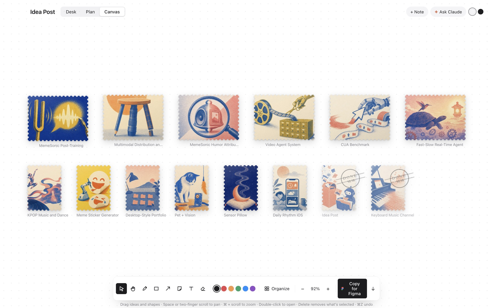
The Canvas is a free board for all ideas at once, with pen, shapes, arrows, sticky notes and text. “Copy for Figma” puts the whole board on the clipboard as SVG, so it pastes into Figma or FigJam as editable vectors.
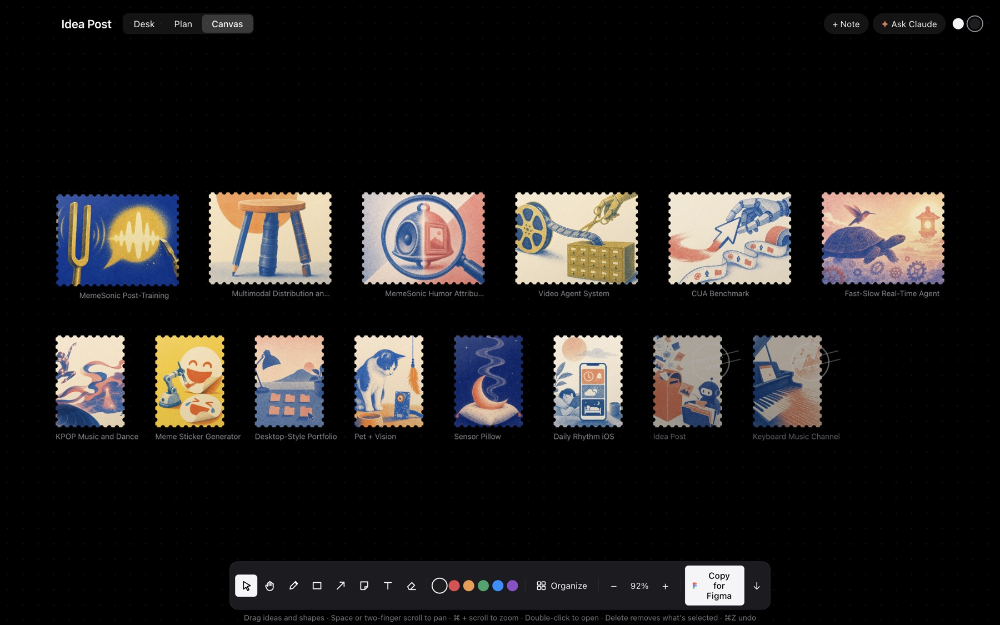